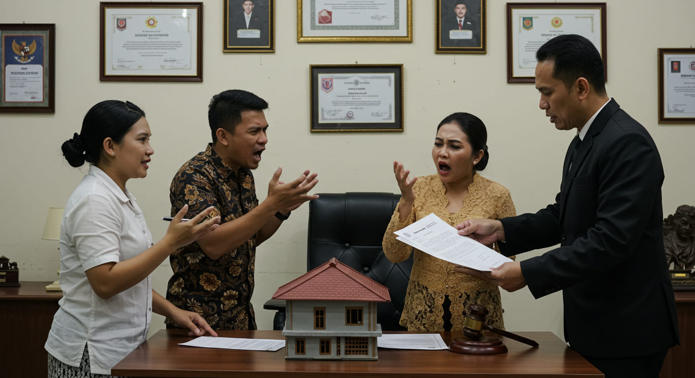

Sengketa Waris dan Cara Penyelesaiannya di Indonesia

Sengketa waris seringkali terjadi di banyak keluarga setelah seseorang meninggal dunia, terutama jika tidak ada kesepakatan antar ahli waris terkait dengan pembagian harta warisan. Konflik ini bisa beragam, mulai dari perbedaan pendapat tentang siapa yang berhak menerima bagian warisan hingga perselisihan mengenai nilai atau jenis harta yang dimiliki oleh pewaris. Dalam artikel ini, kita akan membahas cara-cara penyelesaian sengketa waris, baik melalui mediasi, negosiasi, atau proses hukum melalui pengadilan, serta cara mengurus warisan jika ahli waris tidak sepakat.
I. Sengketa Waris: Penyelesaian Melalui Mediasi dan Negosiasi
Jika terjadi perselisihan waris antara ahli waris, langkah pertama yang dapat diambil adalah mediasi atau negosiasi. Kedua metode ini bertujuan untuk menyelesaikan masalah tanpa harus melalui proses pengadilan yang panjang dan rumit.
a. Mediasi Sengketa Waris
Mediasi adalah proses penyelesaian sengketa di mana pihak ketiga yang netral, yaitu seorang mediator, membantu pihak yang bersengketa untuk mencapai kesepakatan. Mediator tidak memberikan keputusan, tetapi lebih kepada memfasilitasi komunikasi dan membantu mencari solusi yang adil bagi kedua belah pihak.
Keuntungan Mediasi:
Biaya lebih rendah daripada proses pengadilan.
Proses lebih cepat dan fleksibel.
Kerahasiaan dan hubungan antar ahli waris bisa terjaga, terutama jika sengketa terjadi dalam keluarga.
Jika Anda tinggal di Brebes, Anda bisa mencari mediator atau lembaga mediasi setempat yang berkompeten untuk menyelesaikan sengketa waris. Banyak pengadilan di wilayah tersebut yang menawarkan layanan mediasi sebagai alternatif penyelesaian sengketa waris.
b. Negosiasi Langsung antara Ahli Waris
Selain mediasi, Anda juga dapat mencoba negosiasi langsung dengan ahli waris lainnya untuk menyelesaikan sengketa. Jika Anda dapat berdiskusi dengan baik, mungkin akan tercapai kesepakatan tanpa perlu melibatkan mediator atau pengadilan.
Namun, jika negosiasi gagal dan tidak ada titik temu antara ahli waris, langkah berikutnya adalah membawa masalah ini ke pengadilan.
II. Proses Hukum Penyelesaian Sengketa Waris Melalui Pengadilan
Jika mediasi atau negosiasi tidak berhasil menyelesaikan sengketa waris, maka masalah ini bisa dibawa ke pengadilan. Pengadilan akan memutuskan bagaimana harta warisan dibagi berdasarkan hukum yang berlaku, baik itu hukum Islam bagi umat Muslim atau hukum perdata bagi non-Muslim.
Prosedur Hukum di Pengadilan:
Pengajuan Gugatan Waris: Pihak yang merasa dirugikan atau yang ingin memperjuangkan hak warisnya bisa mengajukan gugatan waris ke pengadilan negeri. Gugatan ini akan memuat klaim tentang hak waris dan bagian harta yang diinginkan.
Penyelesaian melalui Sidang: Pengadilan akan memanggil semua pihak yang terlibat untuk mengikuti sidang dan mendengarkan argumen mereka. Hakim akan memutuskan pembagian harta warisan berdasarkan hukum yang berlaku.
Keputusan Pengadilan: Jika pengadilan memutuskan bahwa pembagian warisan tidak sesuai dengan hukum yang berlaku atau ada perselisihan lebih lanjut, maka hakim akan menentukan bagaimana harta tersebut dibagi.
III. Pengurusan Warisan Jika Ahli Waris Tidak Sepakat
Terkadang, perbedaan pendapat antar ahli waris membuat pembagian harta warisan menjadi lebih rumit. Jika tidak ada kesepakatan, ada beberapa cara yang dapat diambil untuk mengurus warisan meskipun ada perbedaan pendapat antar ahli waris.
a. Mediasi dan Arbitrase
Jika ahli waris tidak sepakat mengenai pembagian harta, mediasi dan arbitrase dapat menjadi solusi yang efisien. Arbitrase adalah proses di mana sengketa diselesaikan oleh pihak ketiga yang disepakati, yang akan memberikan keputusan yang bersifat mengikat.
Arbitrase sering digunakan dalam kasus-kasus bisnis atau warisan yang melibatkan aset besar, seperti properti atau perusahaan. Arbitrase memungkinkan keputusan cepat yang dapat diambil tanpa harus melalui pengadilan yang lebih formal dan lama.
b. Proses Pembagian Warisan Tanpa Pengadilan
Jika semua ahli waris sepakat tentang pembagian harta warisan, mereka bisa melanjutkan pembagian tanpa harus melibatkan pengadilan. Pembagian ini dilakukan dengan kesepakatan tertulis yang ditandatangani oleh seluruh ahli waris.
Jika ahli waris berada di Brebes, Anda bisa menghubungi pengacara lokal untuk membuat kesepakatan tertulis yang sah. Pengacara dapat membantu merumuskan pembagian yang sesuai dengan hukum yang berlaku dan memastikan semua pihak terlindungi.
IV. Pembagian Warisan Jika Tidak Ada Wasiat
Jika pewaris tidak meninggalkan wasiat, pembagian warisan di Indonesia akan dilakukan berdasarkan hukum yang berlaku, tergantung pada agama dan status hukum pewaris. Di Indonesia, hukum waris Islam mengatur pembagian warisan bagi umat Muslim, sedangkan hukum perdata mengatur pembagian warisan bagi non-Muslim.
a. Pembagian Harta Warisan Menurut Hukum Islam
Jika pewaris adalah seorang Muslim dan tidak meninggalkan wasiat, maka harta warisan akan dibagi sesuai dengan prinsip faraid, yang mengatur pembagian harta warisan secara rinci.
Anak Laki-laki menerima dua kali lebih banyak daripada anak perempuan.
Suami atau istri yang masih hidup berhak menerima bagian tertentu dari warisan.
Orang tua berhak mendapatkan bagian warisan jika tidak ada anak.
b. Pembagian Harta Warisan Menurut Hukum Perdata
Untuk mereka yang non-Muslim, pembagian warisan akan mengikuti ketentuan dalam Kitab Undang-Undang Hukum Perdata (KUHPerdata). Jika tidak ada wasiat, warisan akan dibagi antara ahli waris sesuai dengan ketentuan yang ada dalam peraturan hukum tersebut, yang umumnya dibagi kepada suami/istri, anak, dan keluarga terdekat.
c. Pengurusan Warisan Tanpa Wasiat
Jika pewaris tidak meninggalkan wasiat, ahli waris dapat mengurus warisan melalui perjanjian bersama untuk menyelesaikan pembagian secara adil. Apabila terjadi ketidaksepakatan antar ahli waris, maka pengadilan dapat dilibatkan untuk menentukan pembagian yang sesuai dengan hukum yang berlaku.
Kesimpulan
Sengketa waris sering kali menjadi sumber ketegangan dalam keluarga, terutama jika tidak ada kesepakatan antara ahli waris tentang pembagian harta. Mediasi, negosiasi, dan arbitrase adalah langkah-langkah yang dapat diambil untuk menyelesaikan masalah tanpa melibatkan pengadilan. Namun, jika sengketa berlanjut, pengadilan akan menjadi jalan terakhir untuk menyelesaikan pembagian warisan. Selain itu, jika pewaris tidak meninggalkan wasiat, maka pembagian warisan akan mengikuti hukum yang berlaku sesuai dengan status agama dan keluarga yang ditinggalkan. Untuk menghindari sengketa yang panjang, sangat disarankan untuk memiliki surat wasiat yang sah dan melakukan pembagian warisan yang adil dan sesuai dengan ketentuan hukum. Jika Anda berada di Brebes, Tegal, atau Purwokerto, Jika butuh bantuan konsultasikan kepada kami gratis lewat WA di 081330723891 Atau 081330723891